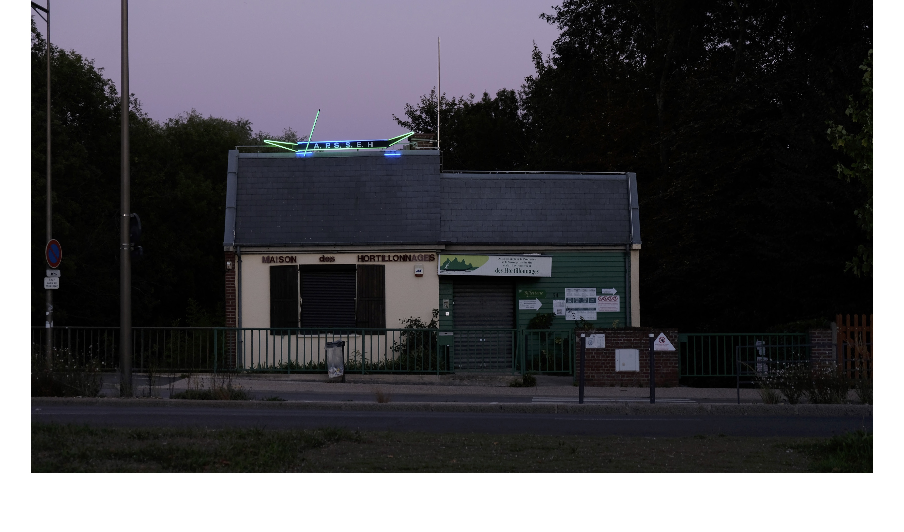
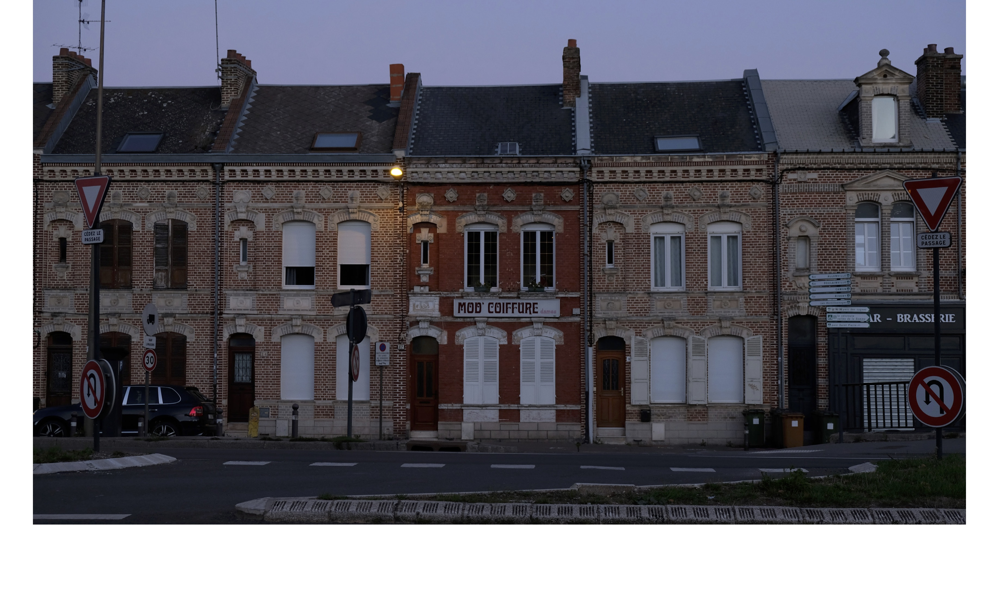
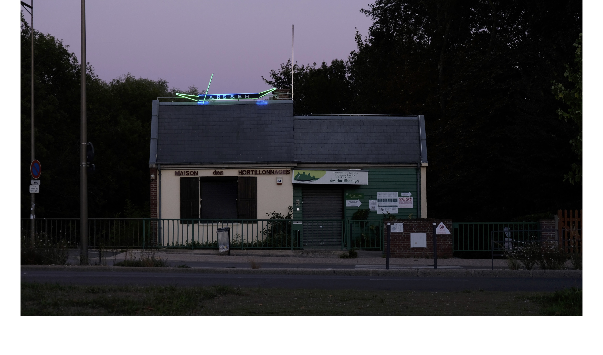
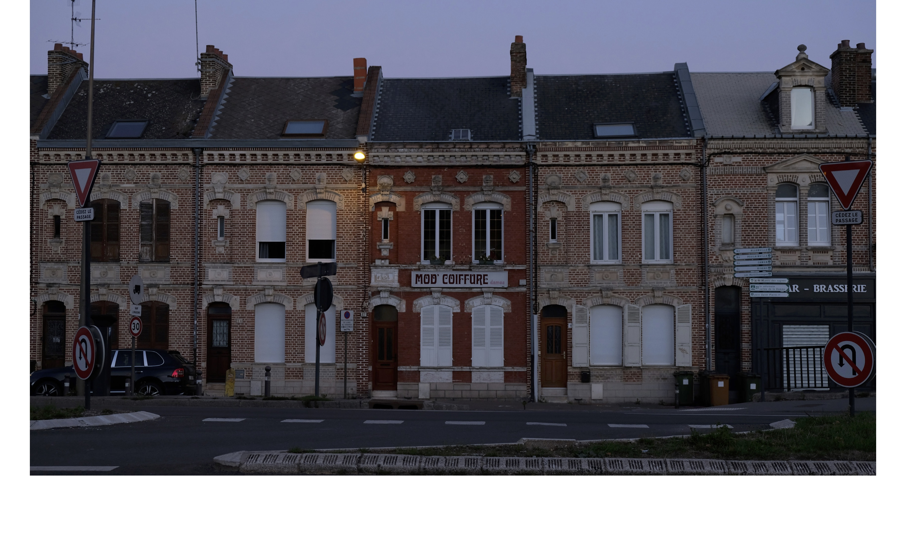

@dpohyootoon_
The Ephemeral Of Architecture
Photography
2022
Les bâtiments sont fixes sur place. Ils changent pas facilement. C'est pourquoi on peut trouver des choses qui changent constamment à travers l'architecture. Au fil du temps, j'ai pris des photos de ce que l'on pouvait voir à travers l'architecture.


 


